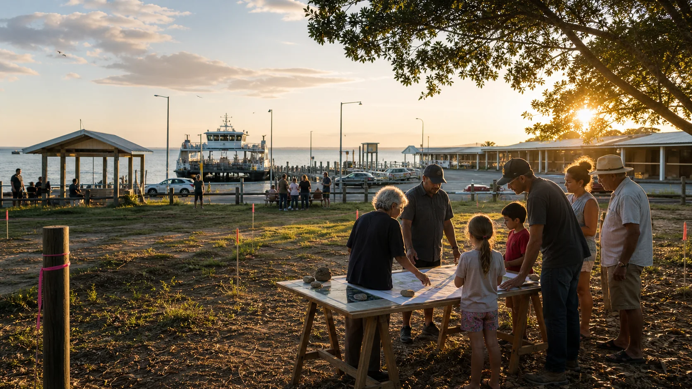

Arrival
Visitors can be welcomed into useful island information before they disappear into cars and buses.

The main site
This address sits where the ferry, town centre, visitor flow, future terminal upgrade and community activity already meet. That makes it the strongest public-facing site for the hub concept.
What the listing says
The public property listing describes 10-12 Ballow Road as a 7,727 square metre freehold waterfront development site, owned by the State of Queensland, near ferry services and local amenities.
The power of the site is its position. The next pass checks planning, culture, access, traffic, flooding, parking, maintenance, safety, insurance and the business case.
Why Dunwich / Goompi
The $41 million Dunwich ferry terminal upgrade is already about arrival, safety, accessibility, wayfinding, commercial opportunities and cultural/heritage values. A nearby hub can turn that infrastructure spend into local activity.
Visitors can be welcomed into useful island information before they disappear into cars and buses.
Markets, sport and cinema work better with last-return ferry notes, bus clarity, safe paths and realistic parking.
Sport bookings, market prep, noticeboards, phone help and shaded seats keep the site useful between events.